| 日付 | 2019年4月21日（日） |
|---|---|
| 山域 | 奥秩父 |
| メンバー | 家族（長女・8歳、長男・5歳） |
| 山行形態 | 子連れ日帰り |
| アクセス | 車 |
| ルート (Map) | 駐車場所 (9:27) - (9:55) 新道分岐点 - (11:16) 兜山 (12:10) - (13:00) 林道 - (13:26) 駐車場 - (13:58) 駐車場所 |
本日は妻の体調が悪いため、3人で山に行くことにする。
あまり遠出したくないので、畦ヶ丸に行こうと思ったが
まだ雪が積もってそうだったので、もう少し標高の低い山にし、
山梨県の兜山に行ってみることにする。
兜山の駐車場を探したが見つからなかったため、
道路脇のスペースに車を停める。標高440m。
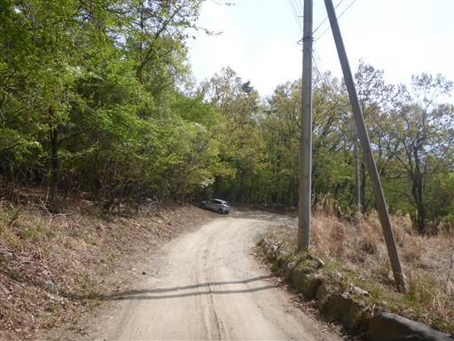
当初の予定より歩く距離が長くなってしまったが、
幸い登山道は整備されている。
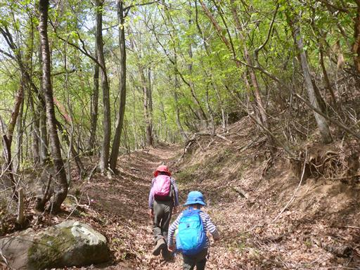
足元にリンドウの花が咲いている。
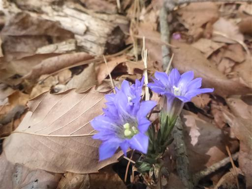
ゴルフボールが落ちている。近くにゴルフ場があるが、こんなところまで飛んできたのだろうか？

分岐点に通行止の案内が出ているが、下に「通行可」と
落書きされていたため、この道を登ることにする。
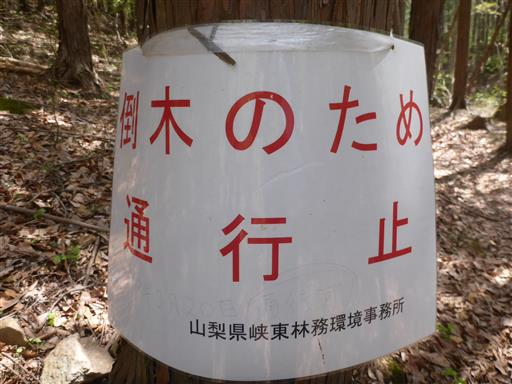
ウラシマソウ。釣り糸のような付属体が特徴的。
珍しい植物でお目にかかったのは初めてだ。

木と木の間から景色が広がる。遠くに富士山の頭が見えている。
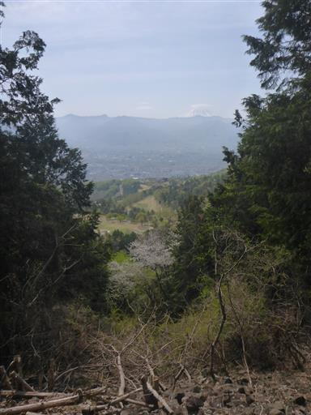
今日は息子の歩みが遅い。娘は退屈そうだ。
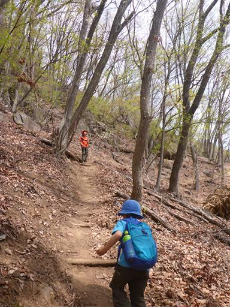
だんだんと岩がちな地形になってきた。
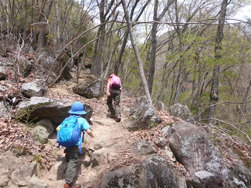
山肌の新緑が美しい。
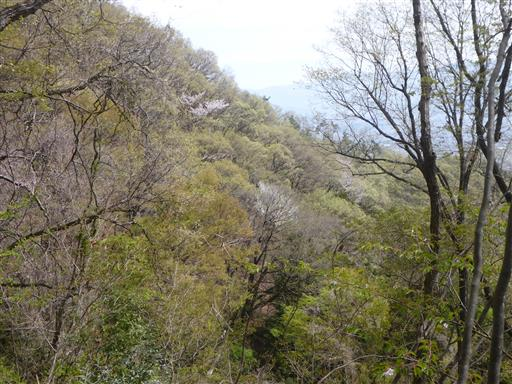
岩場でロッククライミングを楽しんでいる人がいる。
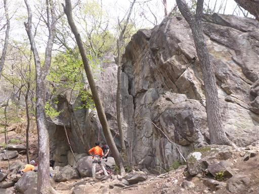
大きな岩の庇。
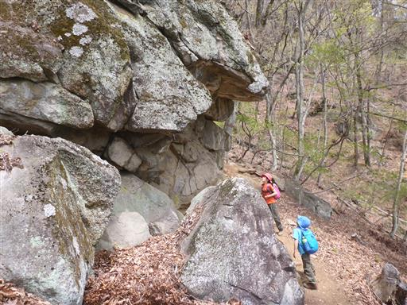
覆いかぶさっていて、こちらに倒れてきそうで怖い。
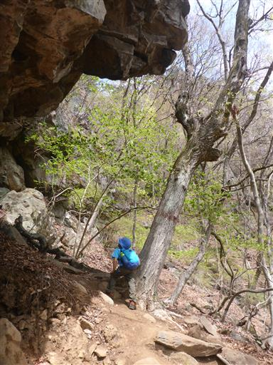
鎖場が現れる。傾斜は緩いので鎖に頼るほどの場所でもない。
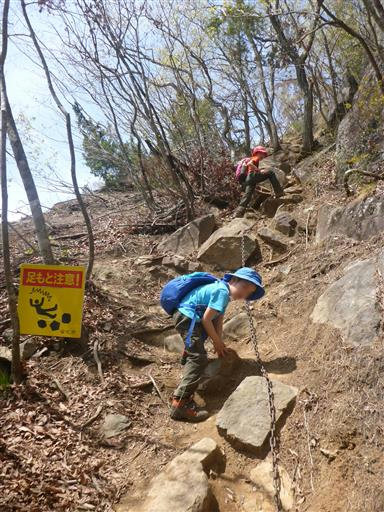
岩の上の展望台に到着。
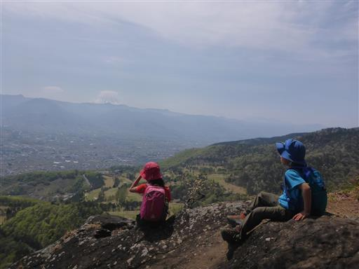
遠く富士山を望めるが、残念ながら頭には雲がかかっている。
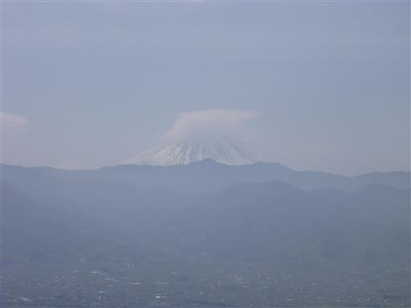
眼下の新緑や花が美しい。
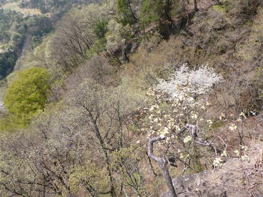
まだまだ鎖場は続く。

大きな段差を乗り越える。
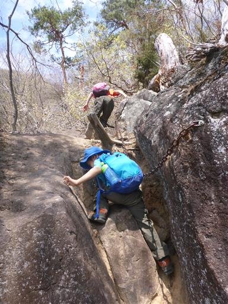
娘は倒木に腰掛けてご満悦。
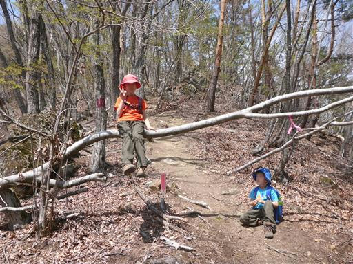
明るい尾根道。山頂はもうすぐだ。
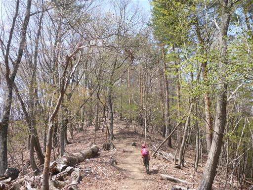
兜山山頂に到着。標高913m。
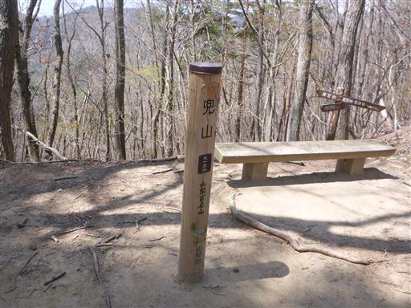
息子は早速、山頂の真ん中にあった木に登っている。
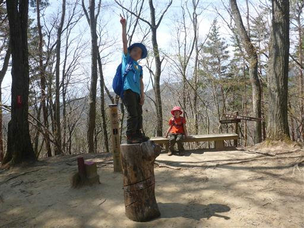
山頂はあまり展望が良くないため、側にある展望台に移動する。
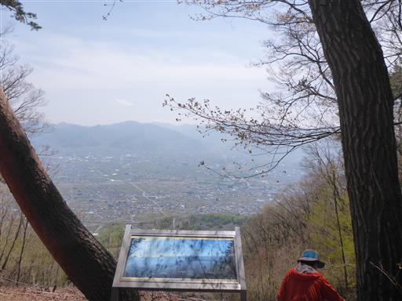
甲府盆地と御坂山塊の山々を見渡せる。
その背後に聳える富士山は完全に雲の中に隠れてしまった。
団体登山者がいて少々狭いが、ここで昼食をとることにする。
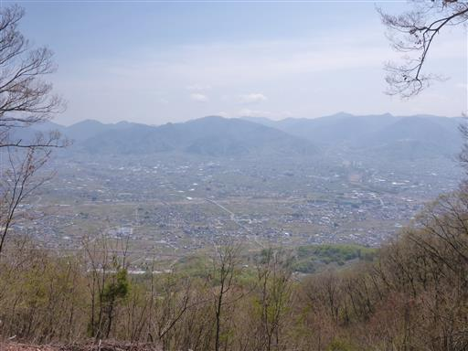
昼食をとったら山頂出発。しばらく尾根道を先に歩いてから下山することにする。
ところどころにアップダウンがあるため、子供たちは文句を言っている。
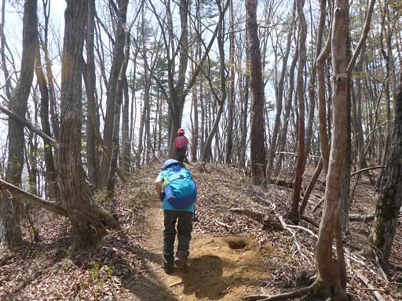
倒木地帯。木の枝の間をすり抜けていく。
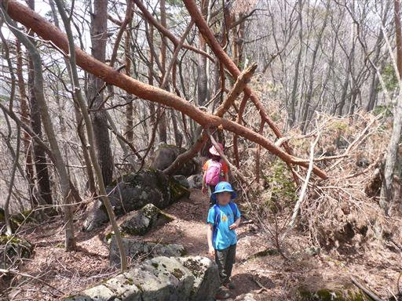
X形の木。幹が途中で交差している。
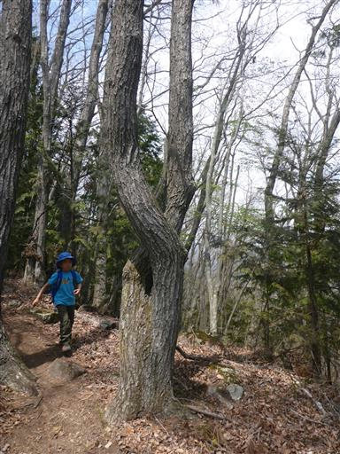
所々でツツジの花が咲いている。ミツバツツジだろうか？
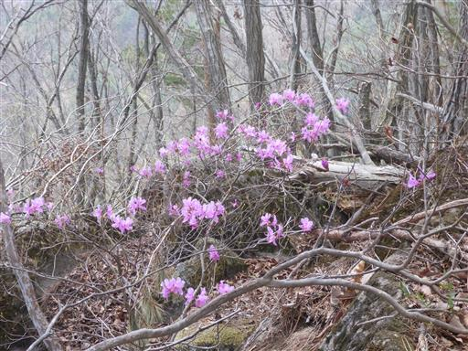
この山は松の木が多い。自然に生えたものなのだろうか？
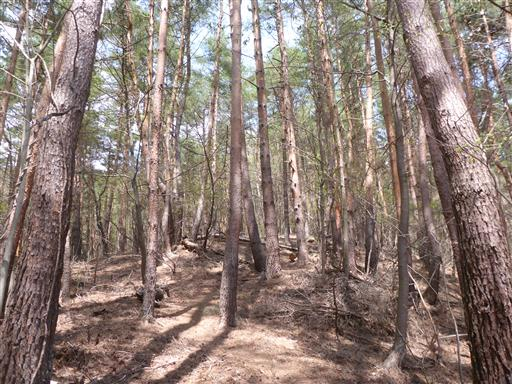
この辺りの木はなぜか全て切り倒されて、はげ山になっている。
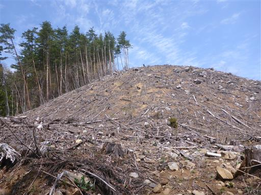
林道に到着。少々荒れた風景の中を歩いていく。
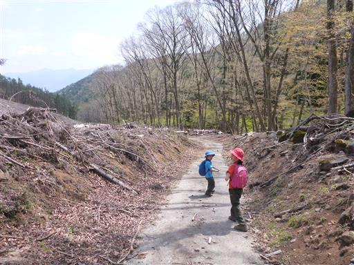
マツダランプの標識。かなり古そうだ。
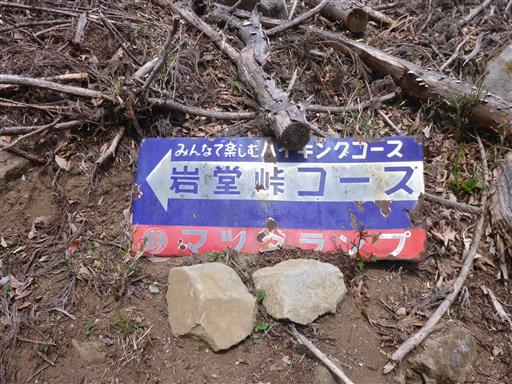
この道のガードレールは木でできている。
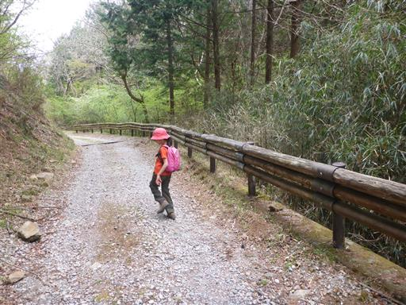
駐車場に到着。本来ならここに車を停めるはずであった。
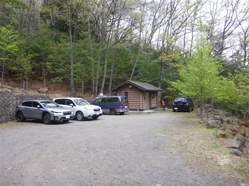
そばを流れる川の水は濁っていてあまりきれいでない。
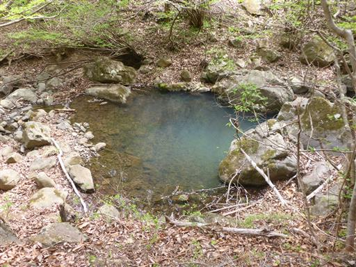
あとは元来た道に合流して、車を停めたところまで戻る。往復で1時間ほどのロスだ。
短い登山道なので、距離を伸ばせてちょうど良かった。
地味な山だったが、久々の山登りをのんびりと楽しめた。
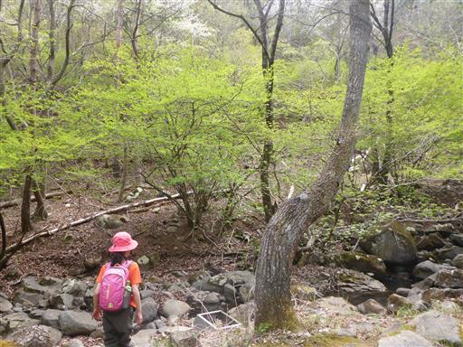